Free
powerpoint
Tutorials
|
Free
powerpoint
Tutorials
|
|
 home home |
Stay at Home and Learn | ||||
PowerPoint Tables |
|||||
|
Tables 1, 2, 3, 4, 5, 6 Charts Flow Charts
In this section, you'll learn how to add a Table to a PowerPoint slide, and how to format it. The table you're going to design is this one: 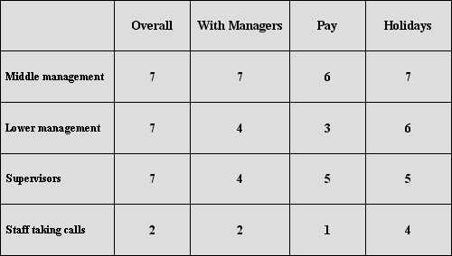 This is slide seven in the Slide Show you have been working on. Load up Presentation Three again to see what the table looks like.
Make a start by clicking Insert > New Slide from the PowerPoint menu bar at the top. The New Slide dialogue box (PowerPoint 2000) and the Task Pane (PowerPoint 2003) have a template for tables: 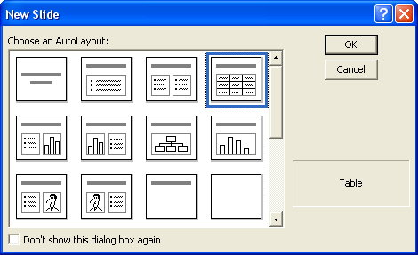 PowerPoint 2000
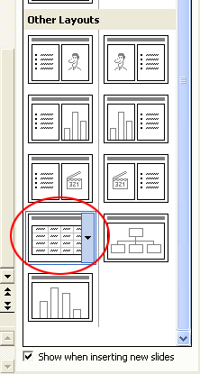 PowerPoint 2003
Select the Table template, and you'll see a slide like this appear: 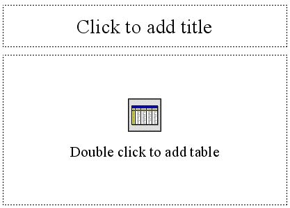 Add the following Title at the top: How happy are you in your job? The font we used was Times New Roman, and the size was 44. When you've added the Title, double click inside the area that says "Double click to add table". As soon as you double click, you'll see a small dialogue box appear: 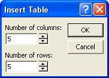 You are being asked how many Columns and Rows you want in your table. Enter 5 for each, as in the image. Then click OK When you click OK, you'll see two things happen: a table will appear on your slide, and a Tables and Borders toolbar will appear. Here's the toolbar in PowerPoint 2000: 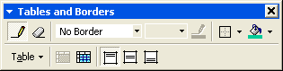 And the toolbar for 2003 users: 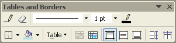 (If you can't see the toolbar then, from the PowerPoint menu at the top, click View > Toolbars > Tables and Borders.) Here's what your table will look like: 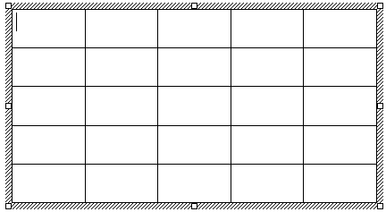 If your table looks too small, you can zoom in a bit. Have a look at the PowerPoint menu bars at the top, and locate the zoom dropdown list: 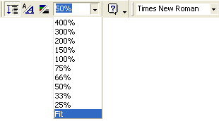 Set it to Fit, to fill the main stage. But notice that the cursor is flashing in the first cell of your table. Information can be typed in the cells, but we don't need anything in the first one. The information to type into your cells is as follows: 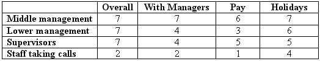 Just type the information for now, and don't worry if the text spills over onto two lines. We'll fix that in a moment. But when you've finished typing, your slide may look something like this rather messy one: 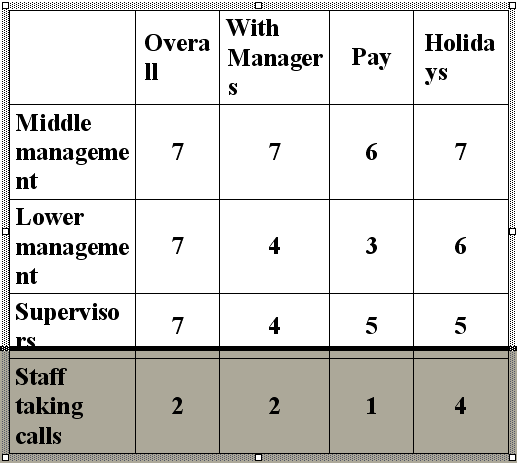
As you can see, the font size is far too big. So big, in fact, that the table is off the slide! We'll see how to fix that in the next lesson
|
||||